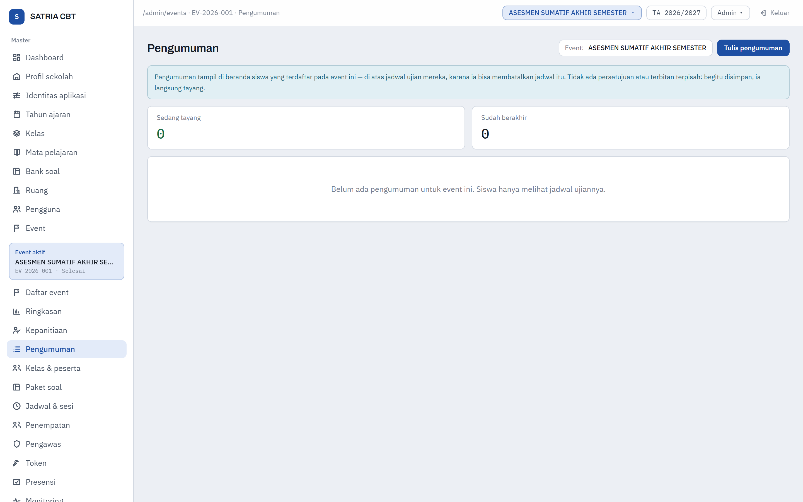
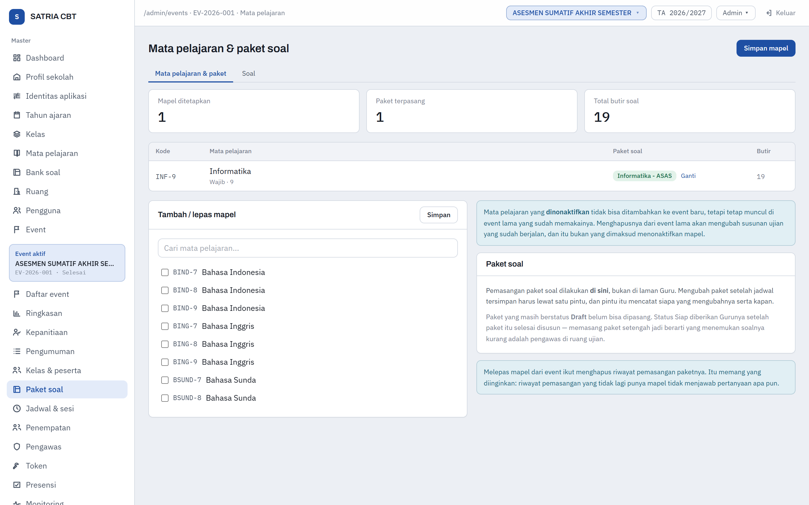
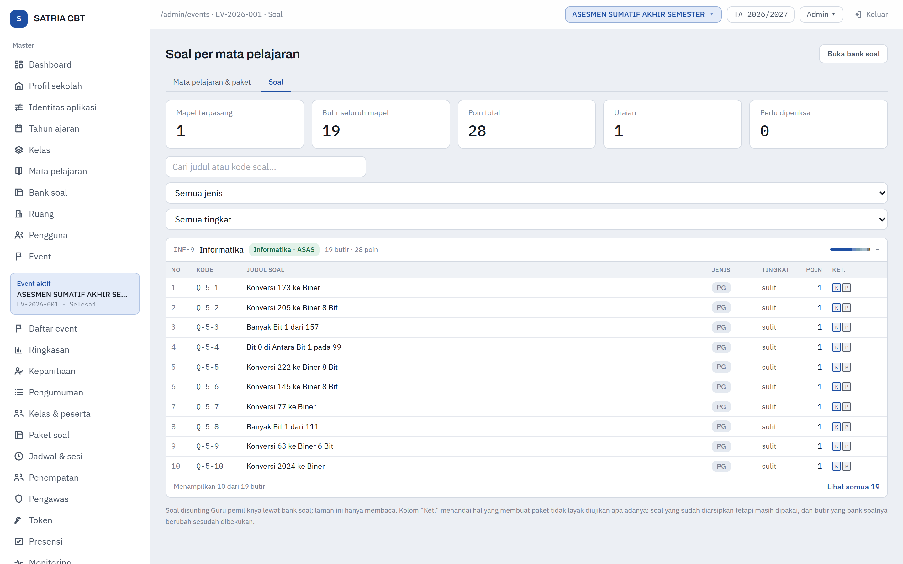

8. Peserta & jadwal
Menarik peserta dari kelas, memasang paket soal ke mata pelajaran, lalu menyusun ujian dan sesinya.
Tiga pekerjaan di bab ini berurutan dan saling menunggu. Peserta tidak punya kursi sebelum ruangnya dialokasikan; sesi tidak bisa dibuat sebelum ujian ada; ujian tidak bisa dibuat tanpa paket soal. Aplikasi memaksa urutannya lewat daftar kesiapan di Bab 7.
Kepanitiaan

Panitia mendaftar dulu, sebelum hari-H, karena pengawas ruang diambil dari daftar ini.
- Tambahkan massal — satu jabatan satu cakupan, diisi berkelompok.
- Kode pengawas — diterbitkan per orang, dan bisa dicetak pada kartu. Kartu yang sudah dicetak tidak mati oleh penerbitan berikutnya.
- Terbitkan kode massal — hanya menyentuh baris yang belum punya kode.
Pengumuman

Pengumuman menempel pada event, bukan pada sekolah. Pertanyaan “apa yang perlu dibaca siswa” selalu tentang satu kegiatan tertentu, dan pengumuman ujian semester tidak relevan bagi siswa yang sedang menghadapi ujian lain.
Kelas & peserta

-
Centang kelas yang ikut di bagian Kelas peserta, lalu Simpan kelas. Ini menentukan keranjang siswa yang tersedia.
-
Tekan Tarik peserta. Siswa dari kelas terpilih masuk ke daftar.
-
Bila ada yang perlu dikeluarkan, tandai lalu Kecualikan terpilih — bukan dihapus dari daftar.
“Kecualikan” berbeda dari “hapus”
Peserta yang dikecualikan tetap tercatat pernah terdaftar, dan bisa dikembalikan. Menghapus akan membuat riwayatnya hilang — dan nilai yang sudah ada menjadi tidak bisa ditelusuri ke siapa pemiliknya.
Mata pelajaran & paket soal

-
Centang mapel yang diujikan, lalu Simpan mapel.
-
Untuk tiap mapel, tekan Ganti pada kolom paket soal, pilih paketnya, lalu Simpan.
Paket yang dipasang akan dibekukan saat ujian dibuat: isinya disalin ke ujian, sehingga menyunting soal di bank soal kelak tidak mengubah ujian yang sudah berjalan.

Laman Soal per mata pelajaran memperlihatkan butir yang sudah terpasang, dan menandai yang basi — soal di bank soal yang sudah disunting setelah dibekukan. Ujian tetap memakai salinan lamanya, jadi yang Anda lihat di laman itu adalah yang benar-benar dikerjakan siswa.
Jadwal & sesi

-
Tekan Tambah ujian: pilih mapel, paket, dan durasinya. Satu mapel yang diujikan menjadi satu ujian.
-
Tekan Tambah sesi pada ujian itu: tentukan tanggal, jam mulai, dan jam berakhir paksa.
-
Tekan Deteksi konflik. Benturan ruang, peserta, dan pengawas dilaporkan di sini.
Tiga waktu yang berbeda
- Jam buka — sejak kapan siswa boleh masuk.
- Jam tutup akses — batas terakhir siswa baru boleh mulai.
- Akhir paksa — pada jam ini seluruh pengerjaan dihentikan, apa pun sisanya.
Status sesi
Sesi bergerak Draft → Siap → Berjalan → Selesai. Tombol Buka pada sesi yang masih Draft akan ditolak — sesi harus Siap dulu, dan itu lewat tombol ubah sesi. Sesi yang batal terselenggara memakai Batalkan, bukan Hapus: sesi yang sudah punya berita acara tidak bisa dihapus.
Sesi tidak ditutup dengan sendirinya?
Setiap menit aplikasi memeriksa sesi yang sudah melewati akhir paksa dan menutupnya sendiri. Bila sesi masih berstatus Berjalan jauh setelah jamnya lewat, periksa apakah penjadwal aplikasi (ujian:tutup-sesi) benar-benar berjalan di server.